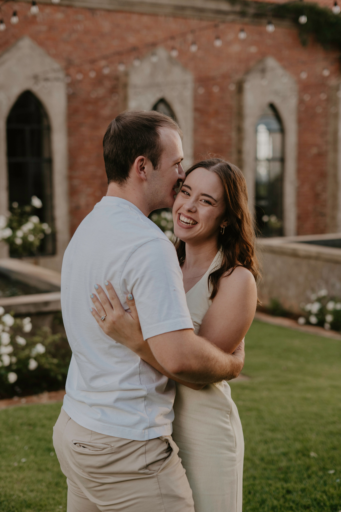
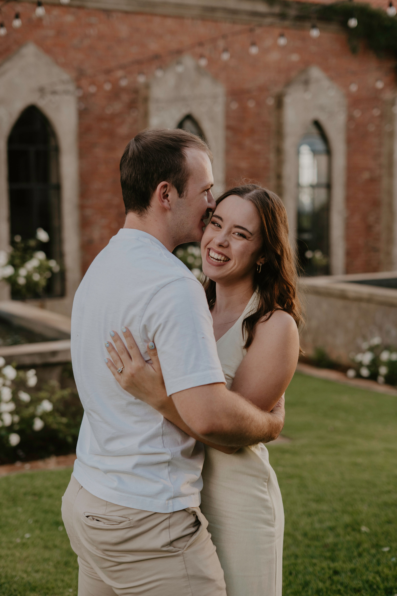
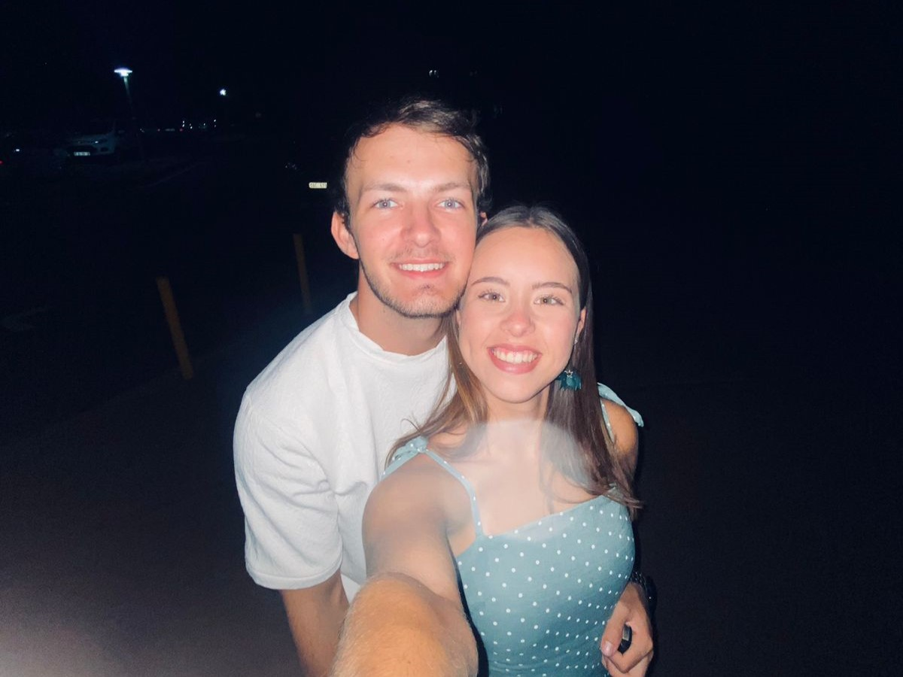
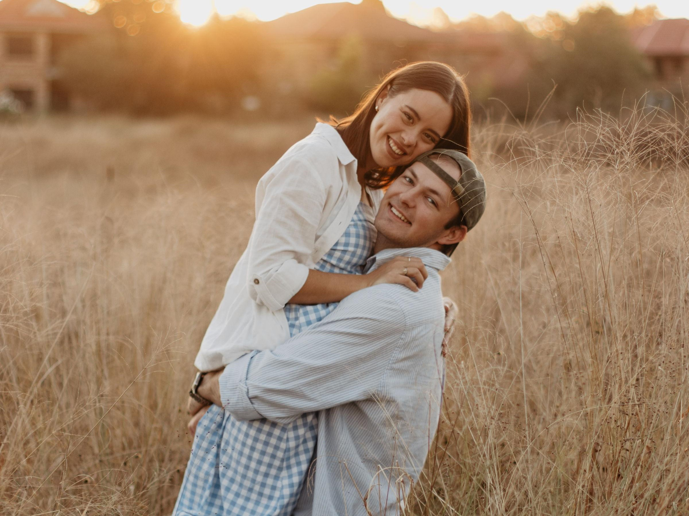
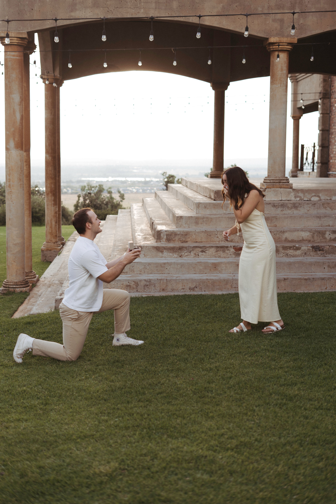

Ons Storie
2022

Ons storie begin as twee nederige eerstejaarstudente onseker van onsself, ver van die huis af en omring deur vreemdelinge. ’n Outjie van die binneland en ’n meisie van die see… wat is die kanse? In ons geval, bitter goed. Dit was ongelukkig nie ’n “love at first sight”-storie nie, want volgens Dani het ons eers drie maande later ontmoet as wat ons eintlik het. Maar so het ’n vriendskap tussen ons begin, een van ondersteuning en veiligheid. Min het ons geweet wat vir ons wag.
2023

’n Jaar later was ons vriendskap nog net so sterk. Ons het vir almal gesê ons is “net vriende”, maar diep binne het ons albei gehoop dit kan iets meer wees. In Julie 2023 vra Liam vir Dani om sy meisie te wees by Potch Dam, met die mooiste wintersonsopkoms en natuurlik sê Dani ja. Die lekkerste deel van daardie jaar was dat ons bure was: ek, die meisie met fairy lights in my venster, en hy “the boy next door”.
2024
Soos enige verhouding was ons eerste jaar saam een van die mees beproefde. Twee vreemdelinge wie se stories nou een geword het. Al was dit een van ons moeilikste jare, het ons steeds Abba God se hand in ons storie gesien. Ons het ’n HK-termyn saam oorleef en kon nie meer opgewonde wees om ons finale jaar as studente saam aan te pak nie.
2025
Sover die lekkerste jaar saam! Dit was al twee jaar sedert Liam vir Dani gevra het om sy meisie te wees, en teen daardie tyd het ons albei geweet ons wil die res van ons lewens saam spandeer. Dit was ’n bittersoet jaar een waar ons totsiens moes sê aan student wees en aan vriende wat ons sien saam grootword het. Maar tussen die soet trane was ons besig om ons toekoms saam te beplan, een wat ons hoop in lyn is met die Here se plan vir ons.
3 Desember 2025
Die dag toe Dani ja gesê het vir die man van haar drome. So moeilik soos dit is om Dani te verras, het Liam dit perfek reggekry. Weereens staan hy voor haar maar dié keer op sy knie, nederig, opreg en 100% seker. Dit was die maklikste ja en die beste besluit van albei ons lewens. So mooi soos die laaste vier jaar was, weet ons albei dat die pad vorentoe net nóg mooier gaan wees.